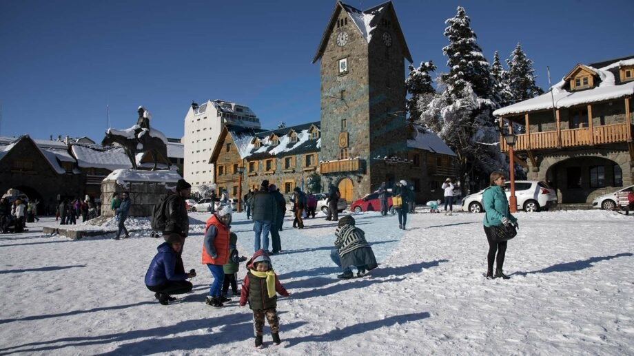
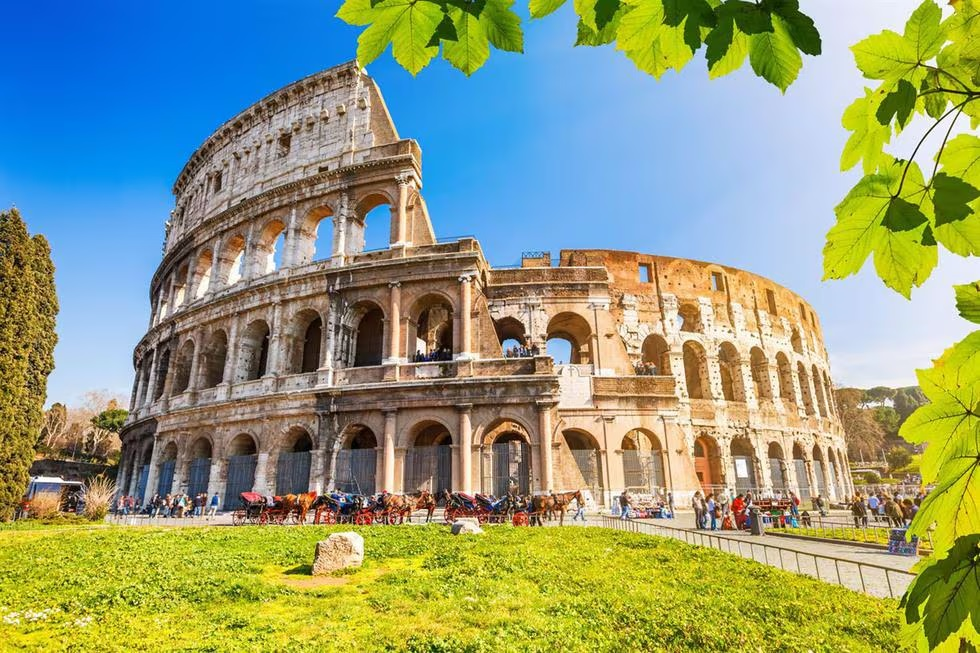

Playa del Carmen - México
Publicado el: 1 de Septiembre, 2024

Un viaje a Playa del Carmen es una combinación perfecta de relajación, aventura y exploración cultural. Desde las impresionantes playas hasta los cenotes místicos, las ruinas mayas y los vibrantes mercados locales, cada día ofrece una nueva experiencia y un nuevo descubrimiento. Al partir, te llevarás recuerdos inolvidables de la calidez del Caribe mexicano y una profunda apreciación por su rica herencia cultural y natural.
Bariloche - Argentina
Publicado el: 15 de Agosto, 2024

Un viaje a Bariloche es una experiencia inolvidable que combina aventura, naturaleza y cultura en un solo destino. Desde las majestuosas montañas y lagos hasta las delicias culinarias y la cálida hospitalidad local, cada día ofrece nuevas oportunidades para explorar y disfrutar de todo lo que esta joya de la Patagonia tiene para ofrecer. Al despedirse de Bariloche, te llevarás no solo recuerdos de paisajes impresionantes, sino también un pedazo del espíritu patagónico en el corazón.
Roma
Publicado el: 5 de Julio, 2024

Un viaje a Roma es un viaje a través del tiempo, la historia, el arte y la cultura. Cada esquina de la ciudad cuenta una historia, cada plaza esconde un tesoro, y cada comida es una celebración de los sabores italianos. Desde la majestuosidad del Vaticano hasta el encanto de Trastevere, Roma te deja con recuerdos inolvidables y el deseo de regresar una y otra vez a la Ciudad Eterna.

Comentarios